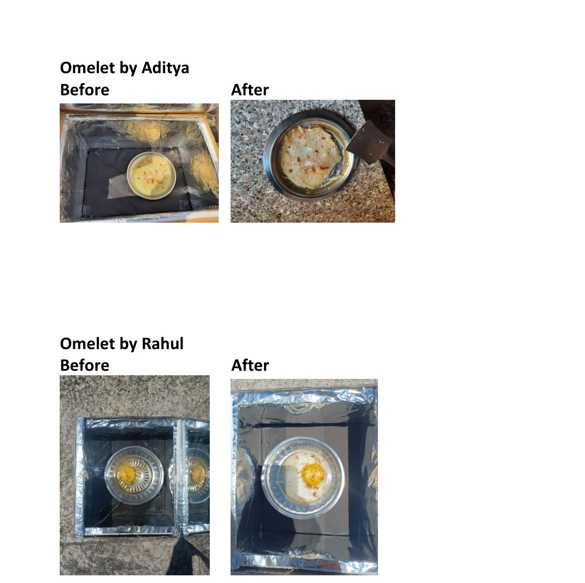

EN110 coursework.
Early work in household energy accounting, waste-to-energy observation and hands-on solar thermal experimentation.
Residential Electricity Bill & Energy Audit
Analysed an MSEDCL residential electricity bill and built a bottom-up monthly load estimate from appliance ratings and usage durations. The appliance-based estimate was about 387 kWh/month versus 385 kWh recorded—a difference of roughly 0.6%.
The original submission is not included in the public website package because it contains utility-bill information.
IIT Bombay Food-Waste Biogas Plant
Documented the process flow and operating conditions of IIT Bombay’s food-waste anaerobic-digestion facility, including shredding/mixing, hydrolysis, digestion, dewatering, gas cleaning, compression and storage.
Box-Type Solar Cooker
Designed and fabricated a low-cost insulated solar cooker using cardboard, aluminium reflector surfaces, a transparent cover and thermal insulation. Aditya’s cooker reached roughly 75°C after about 45 minutes under the reported test conditions and was used to cook rice and an omelette.

The report describes this as Aditya’s first group engineering project at IIT Bombay—useful as a chronological starting point rather than something to overstate as advanced research.